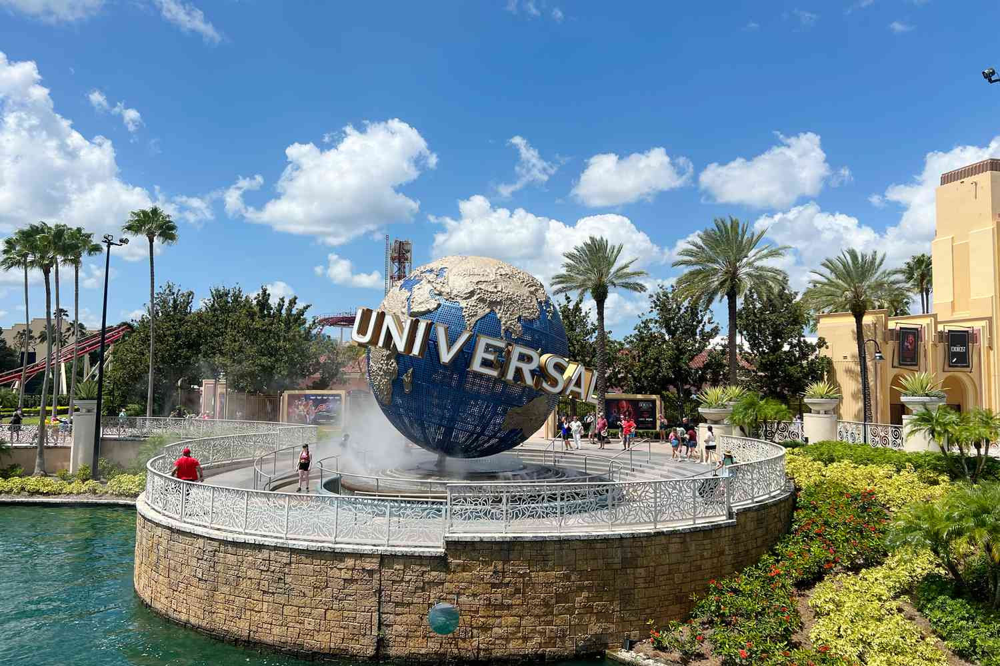
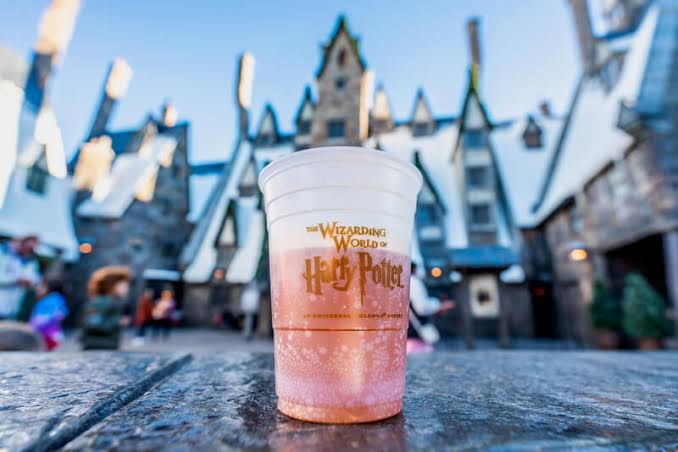
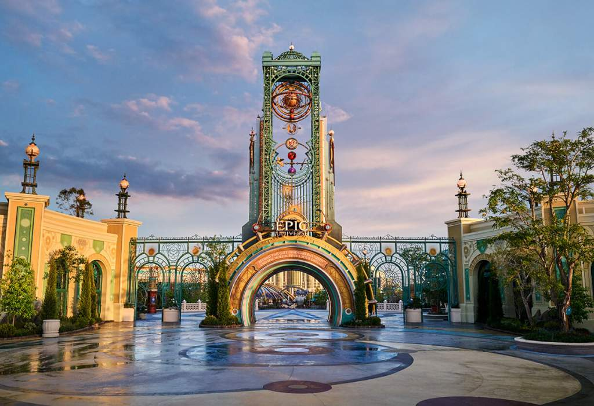

Four years ago, I went to Universal Orlando Resort. I really enjoyed the trip because it was my first time visiting, and I had always heard that it was worth experiencing. During my time there, I was fully immersed and realized how much I had been missing.
Entering the Harry Potter World and seeing all of the details really blew my mind. I felt like I had stepped into the movie. Trying food from the movies and seeing people walking around with wands and capes made the whole experience feel magical.

This vacation is my favorite because I made a lot of great memories and got to experience things I had never done before. The Harry Potter World made the trip really special because it felt like I was actually inside the movies. I had a lot of fun exploring the park, trying different food, and seeing everything in person. I would definitely like to go back again someday.
My favorite moment was when I rode on Popeye & Bluto's Bilge-Rat Barges. This is a water boat ride where you are riding through a river and at multiple parts of the ride you are either sprayed with water or automatic water buckets are filled and are spilled on you. There is literally no escape of getting wet. After riding I was soaked of water from head to toe. Luckly, it was a hot and sunny day so not long after that we were drying up.

On my next visit, I would like to explore their new park, Epic Universe. There are many different worlds to experience, including Super Mario, Harry Potter, How to Train Your Dragon, Dark Universe, and Celestial Park. I am especially interested in seeing how each area is designed because one of my favorite parts of Universal is how detailed and immersive the parks feel. I would also like to try some of the new rides, food, and attractions that were not available during my first trip. Visiting Epic Universe would make the experience feel new again and give me even more reasons to return to Universal Orlando in the future.